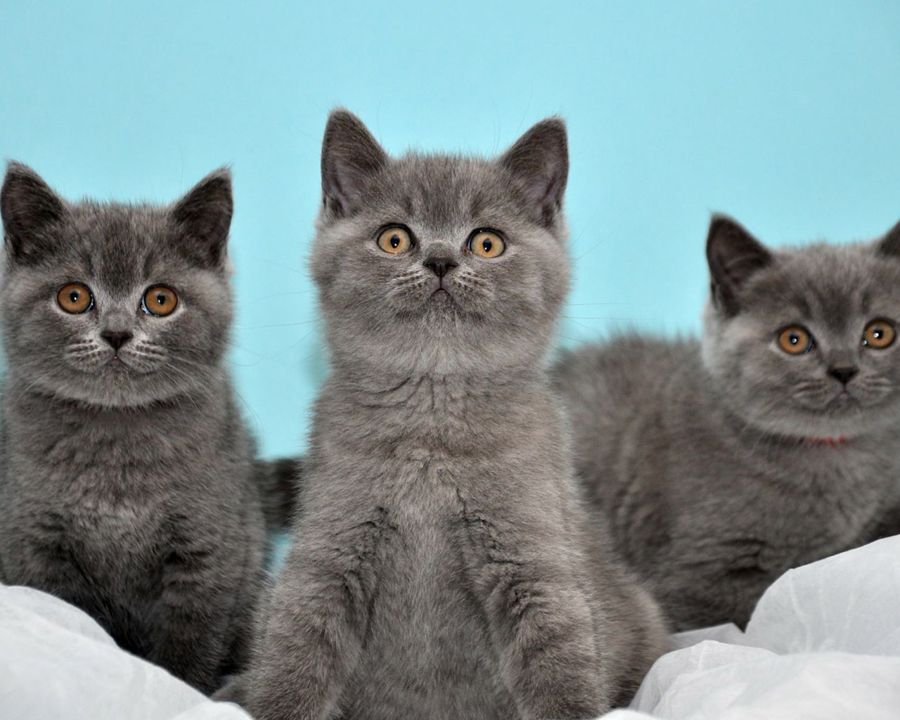

Школьный пресс-центр начал свою работу в необычный для школы год — предъюбилейный 2014-й. Создание школьного пресс-центра и выпуск первого номера школьной газеты «Парта. Здесь пишут самое интересное» — своего рода продолжение рукописного журнала, который существовал в школе в 90-х годах уже прошлого века. Мы не просто начинали работу по освещению важных и интересных событий школьной жизни, но продолжили и, надеемся, развиваем лучшие традиции школы. Для ребят, творческих, активных, работа в школьном пресс-центре — это своеобразный генератор идей. А содержание школьной газеты — это отражение школьной жизни и ведение школьной летописи. Поэтому работа школьного пресс-центра является неотъемлемой составляющей воспитательной работы школы.
Идея создания школьного пресс-центра принадлежит Смирновой И.Г., учителю русского языка и литературы. Собрав коллектив активных, увлечённых и желающих попробовать свои силы учеников 5-х и 7-х классов, Ирина Георгиевна, по её словам, в какой-то степени реализовала своё школьное желание – стать журналистом. Первооткрывателями нового дела стали Иванова Дарья, Сутырина Ирина, Татарова Анжелина, Смирнов Вадим, Апалькова Марина, Герус Елизавета, Лейкина Элиза, Колдаев Андрей, Киль Милена, Баранова Надежда.
.jpg)
Первый состав школьного Пресс-центра
В первые годы работы, да и сейчас, в коллективе нет чёткого распределения обязанностей. Ещё на первых шагах было коллегиально было решено: каждый отвечает за определённый участок работы, меняя его в очередном номере газеты. Это, на взгляд юнкоров, важно: каждый может попробовать себя в написании материала, побыть интервьюером, дизайнером, фотографом, верстальщиком. Это интересно! И тем не менее у газеты свой узнаваемый дизайн, логотип, манера подачи и выбор материала. Важно, что ребята сами выбирают тематику номера, есть постоянные рубрики.
Система теоретических занятий построена таким образом, что юные корреспонденты знакомятся с жанрами и правилами журналистской этики, оттачивают языковое мастерство, обогащая свой словарный запас, постигая лексическое многообразие и образность родного языка, приобретая навыки самостоятельной работы в различных жанрах публицистического стиля; учатся писать заметки, статьи, рецензии, очерки, репортажи.
С сентября 2018 года школьный пресс-центр расширил свои границы, перейдя в полноформатный электронный информационно-новостной контент: было создано на базе соц. сети ВКонтакте сообщество «Пресс-центр ШАНС || Полысаево» включивший электронную газету «ПАРТА. Здесь пишут самое интересное», новостную и информационную рубрики, в соц. сети Instagram открыли фотогалерею школьных мероприятий preshans44, у пресс-центра появилось название «ШАНС» – школьное агентство новостей и событий. И если в печатных продуктах нет чёткого распределения обязанностей, то в электронном формате появились зоны ответственности: Смирнов Вадим – специалист по развитию, Апалькова Марина – фотограф, Гусева Милена – отвечает за Instagram-галерею, Салмин Данил вместе с Элизой Лейкиной являются контент-мейкерами.
Командой ШАНСа были выпущены следующие электронные продукты: видеоролик «Виртуальная экскурсия по школе» (данный проект был подготовлен Смирновым В. и Салминым Д. в рамках Всероссийского публичного смотра среди образовательных организаций «Творчески работающие коллективы школ, гимназий, лицеев России»); «Городу – с любовью» – видеоролик, посвящённый 30-летию города Полысаево; «Когда грохочут пушки – музы не молчат»; «Жить – чтобы помнить», «Война как вдохновение», видеоролик «Блокадный хлеб глазами современников» (эти проекты посвящены победе советского народа в Великой Отечественной войне 1941 – 1945 годов); материал для проведения единого классного часа к 9 Мая 2019 года; под хештегом #защитисебя@pressa44 (бывший #presscentr44_защитисебя) регулярно публикуется материал по безопасности учащихся; музыкальный чарт (в котором публикуются новинки современной популярной музыки); утренний дайджест(содержит в себе краткую информацию на определенный день, публикуется каждый день с утра). Совсем скоро выйдет обновление виртуальной экскурсии по школе, увидят свет новые продукты: гороскоп недели; интеллектуальный чат бот, который будет помогать учащимся (например, подсказывать расписание); а также многие другие, которые на данный момент разрабатываются командой пресс-центра.
С первого года существования школьного пресс-центра коллектив юных журналистов с удовольствием принимает участие в различных конкурсах по популяризации школьных СМИ – это шанс показать не только свою работу получить профессиональную оценку жюри, но и поучиться у других.
В 2018 – 2019 учебном году коллектив школьного пресс-центра принял участие в конкурсе ««СУЭК – Кузбасс»: Моя компания, мой город», посвящённом 15-летию компании СУЭК-Кузбасс в Ленинске-Кузнецком; за участие все члены пресс-центра были награждены ценными подарками. В 2019 – 2020 учебном году корреспонденты школьного пресс-центра «ШАНС» обеспечивали информационную поддержку II региональной научно-практической конференции «Достижение планируемых результатов младших школьников – условие повышения качества начального общего образования», которая проходила на базе МБОУ «СОШ № 44» под патронатом Департамента образования и науки Кемеровской области, Кузбасского регионального института повышения квалификации переподготовки работников образования, Управления образования Полысаевского городского округа.
Проходит время, меняются поколения юнкоров пресс-центра (сейчас в коллективе всего 6 человек: Апалькова Марина, Гусева Милена, Киль Милена, Лейкина Элиза, Смирнов Вадим, Салмин Данил – эти ребята, которые увлечены работой в пресс-центре, что-то ищут, учатся, учат новое поколение юнкоровцев, приходят с разными идеями), но кредо коллектива остаётся прежним: Честь есть не что иное, как хорошее мнение о нас других людей.
Действующий состав школьного Пресс-центра ШАНС
Нам не стыдно за нашу работу. Каждый наш продукт, каждое наше участие в конкурсах и каждая победа даёт нам сил, вселяет уверенность, заставляет ещё больше учиться журналистике, делать номера интересней и полезней.